Mimasaka, Okayama: things to do, food and stays
Mimasaka · Okayama
Mimasaka
Highlighted on the Okayama map.
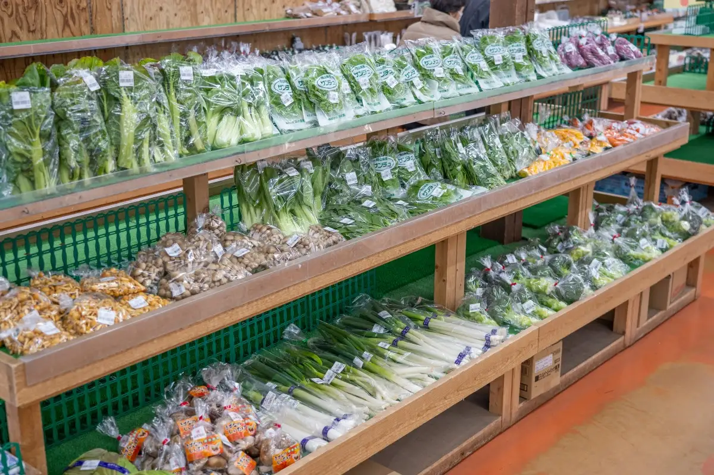
Stay
季譜の里
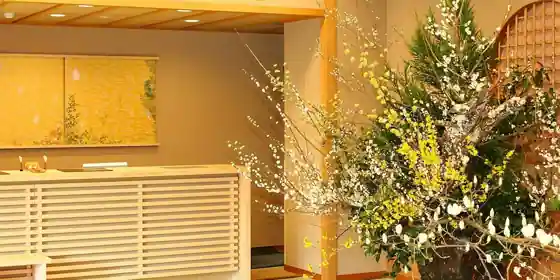
Ki Fu No Sato
花の宿 にしき園
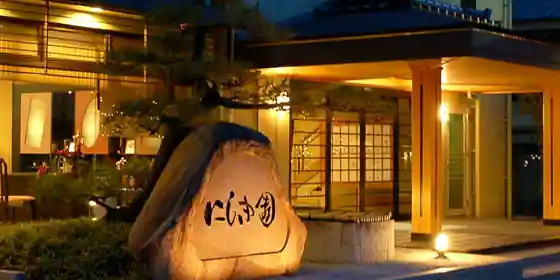
Hana No Yado Nishiki Sono
ポピースプリングス リゾート＆スパ
Popisupuringusu Resort & Supa
Resort hotel at Nojunnoyasaito Onsen in Yunogo, Mimasaka.
リバーサイド湯郷
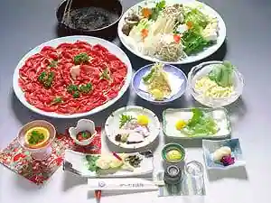
Ribasaido Yunogo
Inn in Rinya, Mimasaka with Wi-Fi; 5-minute drive from (Mimasaka IC.
オーベルジュ ベレッツァ湯郷
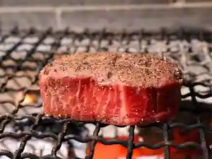
Oberuju Berettsua Yunogo
Inn at Yunogo Onsen in Yunogo, Mimasaka.
1200年続く幻の湯治の郷 湯郷温泉 季譜の里
1200 Nen Tsuzuku Maboroshi No Toji No Sato Yunogo Onsen Ki Fu No Sato
Inn at Yunogo Onsen in Yunogo, Mimasaka.
湯郷温泉 ふくます亭
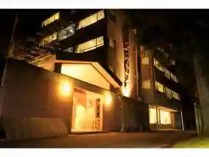
Yunogo Onsen Fukumasu Tei
Inn at Yunogo Onsen in Nakayama, Mimasaka.
ホテル湯の杜
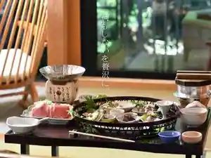
Hotel Yu No Mori
Hotel in Nakayama, Mimasaka with open-air baths and in-room dining.
ペンション＆コテージ リゾートイン湯郷
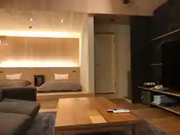
Pension & Cottage Resort Inn Yunogo
Pension at Kannyuyokukanono Onsen in Nakayama, Mimasaka.
ゆのごう 柚子の宿 千里園
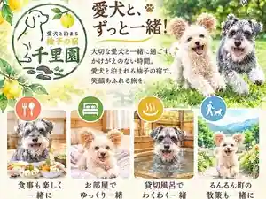
Yunogo Yuzu No Yado Senri Sono
Inn in Yunogo, Mimasaka with private baths.
湯郷温泉 やさしさの宿 竹亭
Yunogo Onsen Yasashisano Yado Chikutei
Inn at Yunogo Onsen in Yunogo, Mimasaka with in-room dining and breakfast available.
湯郷温泉 湯郷グランドホテル【伊東園ホテルズ】
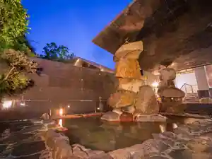
Yunogo Onsen Yunogo Grand Hotel (Ito Sono Hotels)
Hotel at Yunogo Onsen in Yunogo, Mimasaka with buffet meals.
Dining
BON APPETIT
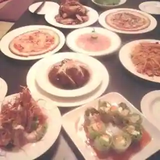
BON APPETIT
らぁめん・つけそば 頂 岡山美作店
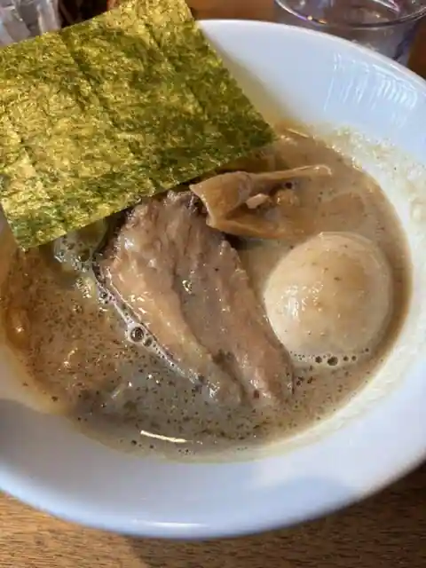
Ramen Tsukesoba Itadaki Okayama Mimasaka
美作ホルモン ほるやん
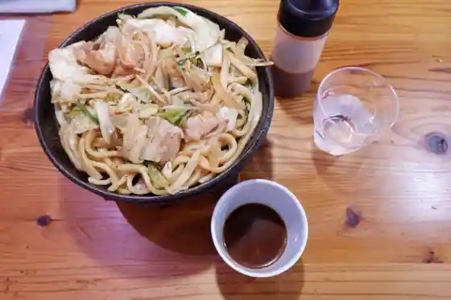
Mimasaka Horumon Horuyan
やさしさの宿 竹亭
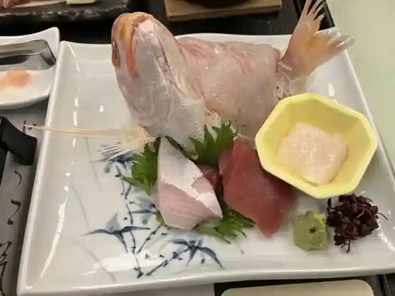
Yasashisano Yado Chikutei
ゆのごう美春閣
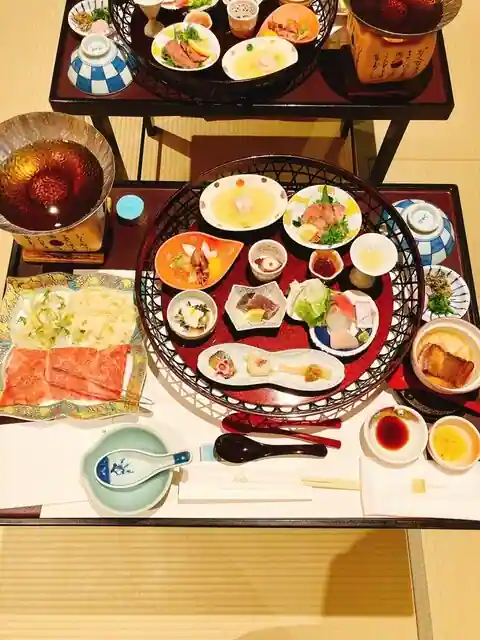
Yunogo Miharu Kaku
西の屋 湯郷店
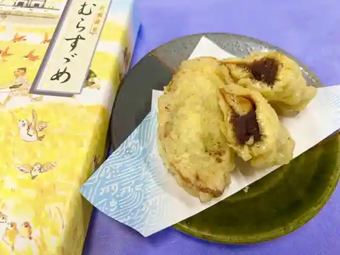
Nishi No Ya Yunogo
あいゆうわいえ
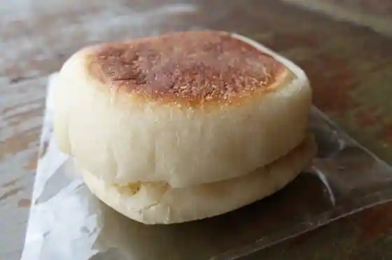
Aiyuwaie
フルーツとクリームパン工房 こびとのおやつ
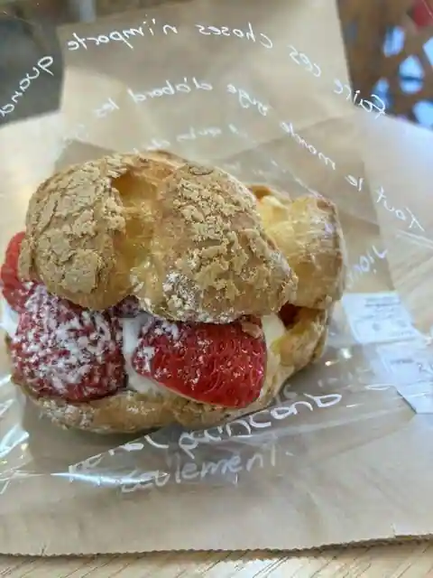
Furutsu To Kurimu Bakery Kobo Kobitonoyatsu
農園カフェ 湯郷
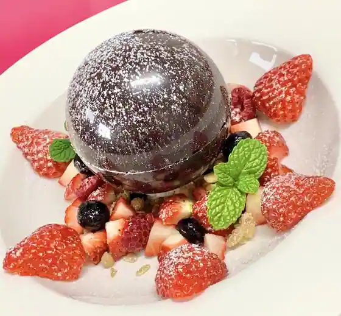
Noen Cafe Yunogo
彩菜茶屋レストラン
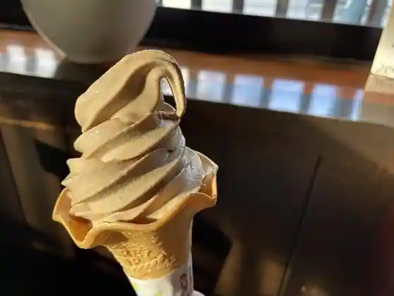
Ayana Chaya Restaurant
湯郷グランドホテル
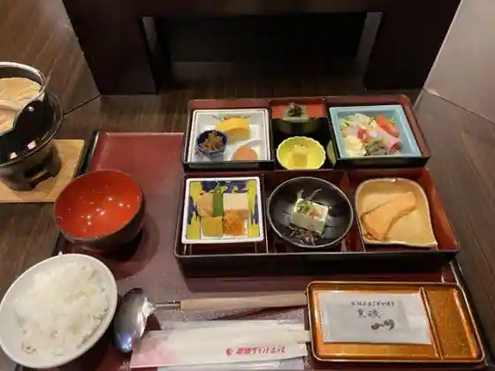
Yunogo Grand Hotel
ポルト・ボヌール
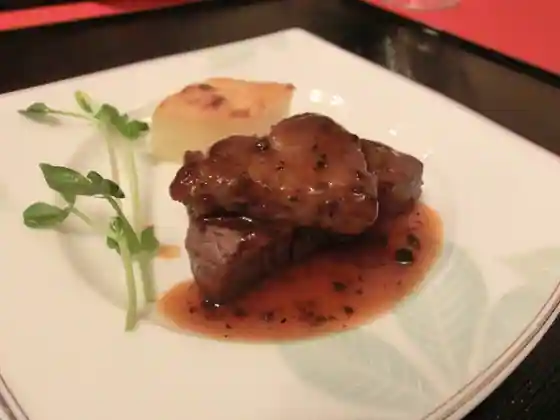
Poruto Bonuru
湯郷温泉 かつらぎ
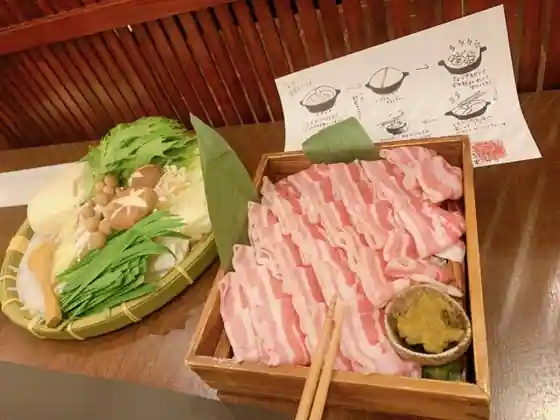
Yunogo Onsen Katsuragi
ポピースプリングス
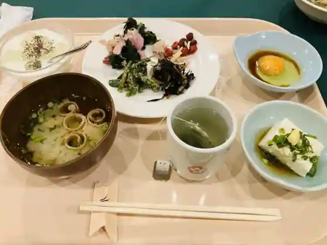
Popisupuringusu
作州武蔵カントリー倶楽部 レストラン
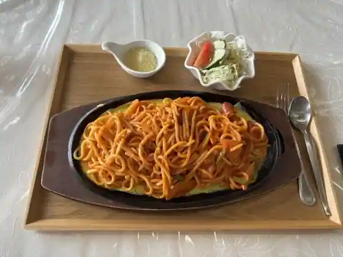
Sakushu Musashi Kantori Kurabu Restaurant
シボン
Shibon
ゴンベ
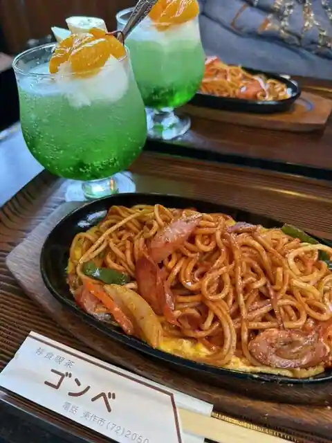
Gonbe
キッチン あおいろ
Kitchen Aoiro
ノンちゃん
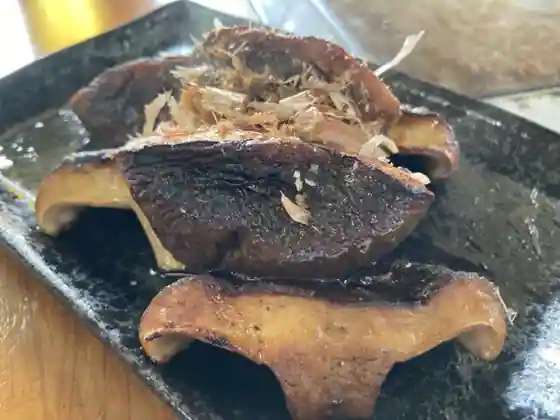
Non Chan
レストラン ソノマ
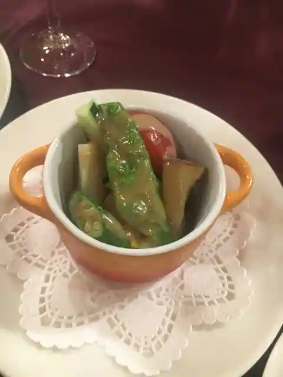
Restaurant Sonoma
湯郷温泉 清次郎の湯 ゆのごう館
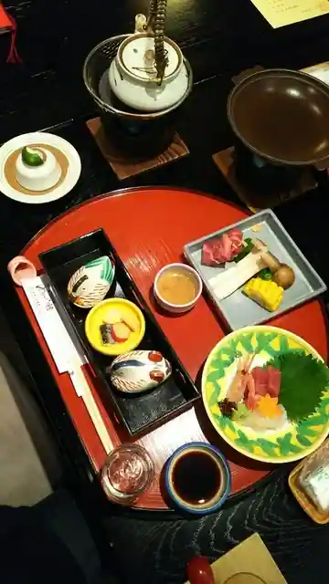
Yunogo Onsen Seijiro No Yu Yunogo Kan
ザッカとオヤツ ボワ
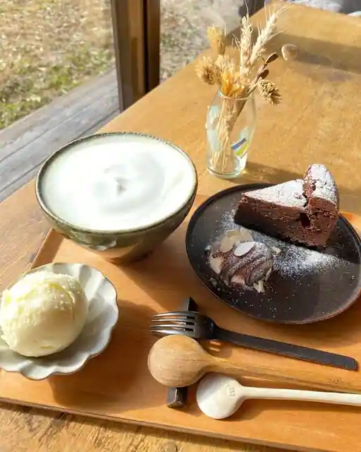
Zakka To Oyatsu Bowa